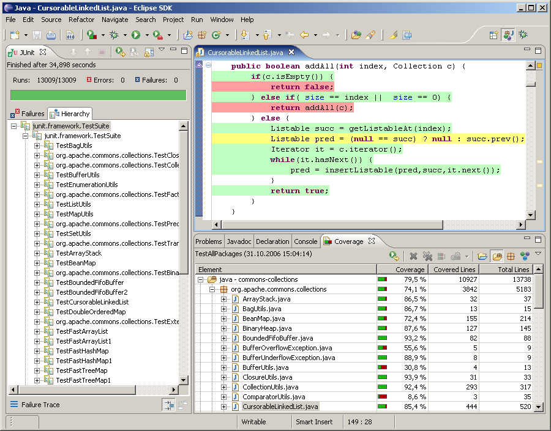

testing best practices
group discussion
who are we...
...and what are we doing here?
Goals:
create "testable" code
TestableCode instanceof GoodCode == false
...but
GoodCode instanceof TestableCode == true
developer workflow
Integrating testing into the development workflowtools

create "testable" code
Google Engineer's Guide to Writing testable codeproblem: class does too much
why that’s bad:
- Hard to debug
- Hard to test
- Non-extensible system
- Difficult for new resources and hard to hand off
problem: class does too much
why that’s bad:
- Not subject to altering behavior via standard mechanisms: decorator, strategy, subclassing: you end up adding another conditional test
- Hard to give a name to describe what the class does. Whenever struggling with a name, the code is telling you that the responsibilities are muddled. When objects have a clear name, it is easy to keep them focused and shear off any excess baggage.
problem: class does too much
how to tell
Try to sum up what a class does in a single phrase. If this phrase includes “AND” it’s probably doing too much.solution: class does too much
Class-responsibility-collaboration (CRC) card
"If it fits, it ships!"
solution: class does too much
Reduce Cyclomatic Complexity: Number of paths through a code base
- Higher complexity is harder to test
- High complexity is tied to low cohesion (degree to which the elements of a module belong together.)
problem: constructor does real work
solution: constructor does real work
Dependency Injection
Outside the scope of what we want to talk about... (but look at Spring and Guice).moe money moe problems?
Continue to look at PDFdeveloper workflow
modifying workflow to encourage testing
- start thinking about features in the context of "how do we test that??"
- think outside the container: You don’t need to start the Web container to run code (even database code)!
developer workflow
- business logic tests: Fast, Repeatable (automatable??)
- database CRUD tests: Slow, Unrepeatable (non-automatable??)
tools
right tool for the right job
- JUnit
- Mockito/PowerMock
- EclEmma
